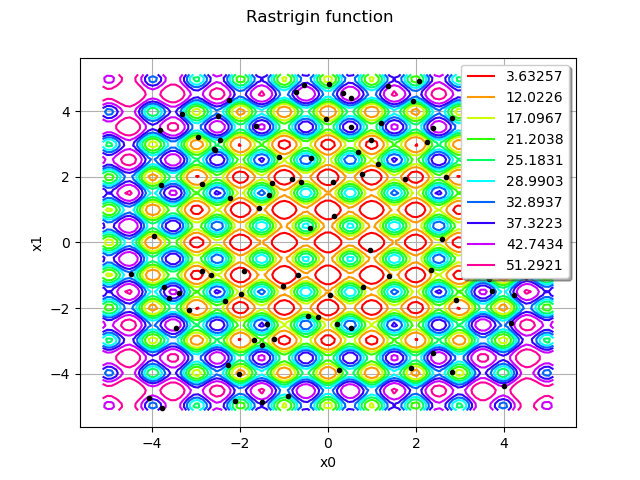
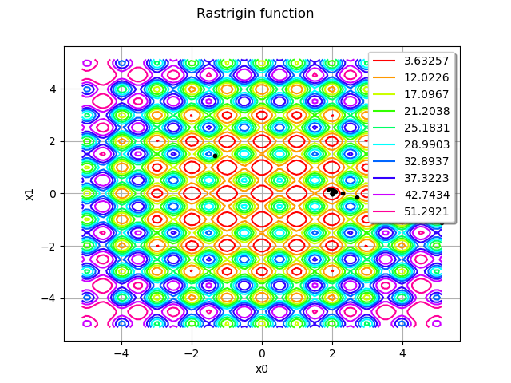
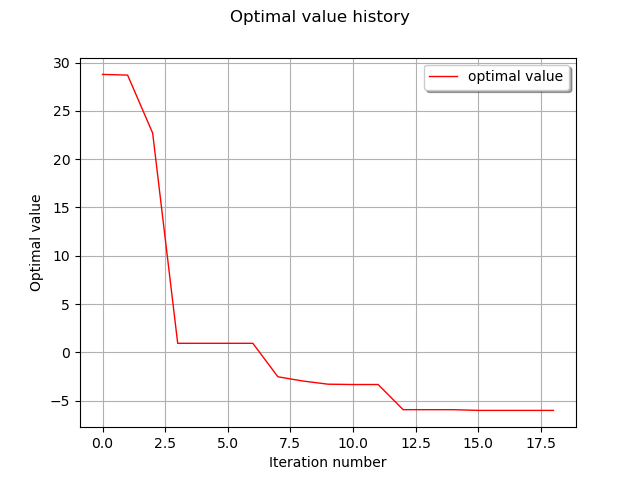
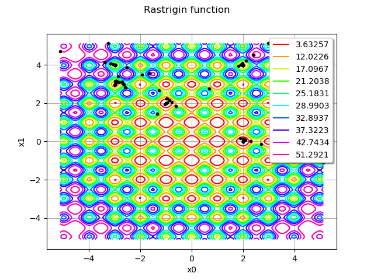

Note
Click here to download the full example code
Optimization of the Rastrigin test function¶
The Rastrigin function is defined by:
where and .
It has a global minimum at where .
This function has several local minimas. This is why we use the Multistart algorithm. In our example, we consider the bidimensional case, i.e. .
Reference:
Rastrigin, L. A. “Systems of extremal control.” Mir, Moscow (1974).
Rudolph. “Globale Optimierung mit parallelen Evolutionsstrategien”. Diplomarbeit. Department of Computer Science, University of Dortmund, July 1990.
Definition of the problem¶
import openturns as ot
import openturns.viewer as viewer
from matplotlib import pylab as plt
import numpy as np
ot.Log.Show(ot.Log.NONE)
def rastriginPy(X):
A = 10.0
delta = [x**2 - A * np.cos(2 * np.pi * x) for x in X]
y = A + sum(delta)
return [y]
rastriginPy([1.0, 1.0])
Out:
[-8.0]
dim = 2
rastrigin = ot.PythonFunction(dim, 1, rastriginPy)
lowerbound = [-5.12] * dim
upperbound = [5.12] * dim
bounds = ot.Interval(lowerbound, upperbound)
xexact = [0.0] * dim
Plot the iso-values of the objective function¶
rastrigin = ot.MemoizeFunction(rastrigin)
graph = rastrigin.draw(lowerbound, upperbound, [100]*dim)
graph.setTitle("Rastrigin function")
view = viewer.View(graph)
We see that the Rastrigin function has several local minimas. However, there is only one single global minimum at .
Define the starting points¶
The starting points are computed from Uniform distributions in the input domain. We consider a set of 100 starting points.
U = ot.Uniform(-5.12, 5.12)
distribution = ot.ComposedDistribution([U]*dim)
size = 100
startingPoints = distribution.getSample(size)
graph = rastrigin.draw(lowerbound, upperbound, [100]*dim)
graph.setTitle("Rastrigin function")
cloud = ot.Cloud(startingPoints)
cloud.setPointStyle("bullet")
cloud.setColor("black")
graph.add(cloud)
view = viewer.View(graph)

We see that the starting points are randomly chosen in the input domain of the function.
Create and solve the optimization problem¶
problem = ot.OptimizationProblem(rastrigin)
problem.setBounds(bounds)
solver = ot.TNC(problem)
algo = ot.MultiStart(solver, startingPoints)
algo.run()
result = algo.getResult()
xoptim = result.getOptimalPoint()
xoptim
[1.98991,-7.25028e-10]
xexact
Out:
[0.0, 0.0]
We can see that the solver found a very accurate approximation of the exact solution.
result.getEvaluationNumber()
Out:
19
inputSample = result.getInputSample()
graph = rastrigin.draw(lowerbound, upperbound, [100]*dim)
graph.setTitle("Rastrigin function")
cloud = ot.Cloud(inputSample)
cloud.setPointStyle("bullet")
cloud.setColor("black")
graph.add(cloud)
view = viewer.View(graph)

We see that the algorithm evaluated the function more often in the neighbourhood of the solution.
graph = result.drawOptimalValueHistory()
view = viewer.View(graph)

rastrigin.getEvaluationCallsNumber()
Out:
30470
In order to see where the rastrigin function was evaluated, we use the getInputHistory method.
inputSample = rastrigin.getInputHistory()
graph = rastrigin.draw(lowerbound, upperbound, [100]*dim)
graph.setTitle("Rastrigin function")
cloud = ot.Cloud(inputSample)
cloud.setPointStyle("bullet")
cloud.setColor("black")
graph.add(cloud)
view = viewer.View(graph)
plt.show()

We see that the algorithm explored different regions of the space before finding the global minimum.
Total running time of the script: ( 0 minutes 1.045 seconds)